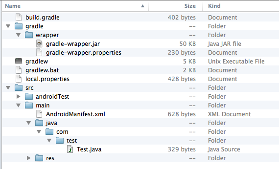

安卓项目的构建工具最早是ant，然后是maven，现在google官方在主推的是gradle。
gradle是基于Groovy， 基于DSL语法的自动化构建工具，本文只是从安卓的角度介绍下gradle的使用和特点。
Gradle combines the power and flexibility of Ant with the dependency management and conventions of Maven into a more effective way to build.上面是gradle官网的介绍原文，还是挺贴切的。
gradle最新版本是2.0，但是android plugin最新版是0.12，依赖的是gradle 1.12。本文里面的内容都是以java 1.7，gradle 1.12，gradle android plugin 0.12，build tools 20.0.0的环境为开发环境的。
下面是用android sdk创建一个用gradle模板的安卓项目
android create project -n test -t android-19 -p test -k com.test -a Test -g -v 0.12.0
下图是建好的目录结构：build.gradle就是构建配置脚本；gradlew和gradle目录是一个wrapper，用来在没有gradle的环境下来build时，代替grale命令，直接可以使用./gradlew；
而其他目录结构也和用ant或者maven创建的略有不同，比如AndroidManifest的位置等等，在下面映射目录一节具体介绍。
buildscript {
repositories {
//使用maven的默认repo，也可以加第三方的repo
mavenCentral()
}
dependencies {
//指定特定版本，也可以是0.12.+表示0.12.0以上的版本。
classpath 'com.android.tools.build:gradle:0.12.0'
}
}
apply plugin: 'android' //不需要再apply java的插件
android {
//这里的sdk和buildtools的版本号，需要精确指定，感觉比较弱，后面有可以自动配置的办法
compileSdkVersion 'android-19'
buildToolsVersion '20.0.0'
buildTypes {
release {
runProguard false
proguardFile getDefaultProguardFile('proguard-android.txt')
}
}
}
gradle build后就生成build目录，build/outputs/apk是生成的apk，而.gradle目录是一个cache目录，这2个目录都建议加入到gitignore里面。
比较传统的目录结构是AndroidManifest.xml, src, res, libs, assets目录都是在项目根目录的，下面的配置就可以指定不同的目录的具体位置。可以使用安卓的目录结构，而不是更深的java风格的项目目录层级。
android {
...
sourceSets {
main {
manifest.srcFile 'AndroidManifest.xml'
java.srcDirs = ['src']
aidl.srcDirs = ['src']
res.srcDirs = ['res']
assets.srcDirs = ['assets']
jniLibs.srcDirs = ['libs']
}
}
...
}
gradle本身是可以编程的语言，所以很多事情可以通过编写函数来增强。上文提到手写sdk和buildtools的版本是很烦的一件事情，下面的函数就可以自动检测本地环境。具体的实现见下面链接的gist。
android {
...
compileSdkVersion highestSdkAvailable(20)
buildToolsVersion latestBuildToolsAvailable("20.0.0")
...
}
配置release包所有的签名，里面的参数要用真正的值换掉
android {
...
signingConfigs {
release {
storeFile file("/your.keydir/your.keystore")
storePassword "your.password"
keyAlias "your.key.alias"
keyPassword "your.alias.passord"
}
}
...
}
buildTypes其实就是不同的任务类型，对应安卓来说，最常见的是下面的release，beta，debug三种类型。
android {
...
buildTypes {
release {
proguardFile 'proguard-project.txt'
signingConfig signingConfigs.release //使用release签名
jniDebugBuild false
debuggable false //关闭debug模式
runProguard true //混淆
zipAlign true
}
beta {
proguardFile 'proguard-project.txt'
signingConfig signingConfigs.release //同样用release签名
jniDebugBuild false
debuggable true
runProguard false
zipAlign true
}
debug {
applicationIdSuffix ".debug" //包名加debug后缀
jniDebugBuild true
debuggable true
zipAlign true
}
...
}
上面release包和beta包，同样使用release签名，是方便测试，具体可以根据实际情况来调整混淆及其他开关。debug包加后缀的目的，是可以同时安装debug和release的包，也是为了方便调试的。
通过上面的配置，就有了一个基本的安卓项目的构建脚本了。运行gradle build就可以打出来全部的包了。
gradle真正强大的地方不在于比较人性化简明的语法，而是在方便灵活的依赖管理。
下面的repositories需要在build.gradle的顶级节点配置，不能写在android或buildscript里面。
repositories {
//maven的repo，也就是http://repo1.maven.org/maven2
mavenCentral() //所以可以直接使用maven的众多jar，aar包
//本地的maven repo，比较少用
mavenLocal()
//第三方的maven repo
maven {
url "http://mente.github.io/facebook-api-android-aar"
}
//使用本地文件夹作为repo
flatDir {
dirs 'aars'
}
}
dependencies {
//support包
compile 'com.android.support:support-v4:20.0.0'
//aar
compile ('fr.avianey:facebook-android-api:3.16.0@aar') {
transitive = true
}
//jar
compile 'com.jakewharton:butterknife:5.1.2'
//本地libs目录里的jar
compile files('libs/umeng_sdk.jar')
//暴力引入lib目录里的所有jar包，不推荐
compile fileTree(dir: 'libs', include: ['*.jar'])
}
因为现在的安卓项目越来越复杂，所以模块化是趋势，而且依赖的库有时候是开源的，也涉及到二次开发的需求。settings.gradle的模式就能很好的支撑模块化的复杂依赖构建的场景。
首先，在项目根目录下编写build.gradle, settings.gradle文件，而其他模块项目，主项目，都是二级目录。
android-demo:
|__________ app //应用主项目
|__________ app-lib //依赖的库项目
|__________ facebook-sdk //第三方sdk代码，比如facebook
|__________ build.gradle
|__________ setings.gradle
根目录的build.gradle可以配置所有模块都有的基本配置，如下面的例子:
buildscript {
repositories {
mavenCentral()
}
dependencies {
classpath 'com.android.tools.build:gradle:0.12.+'
}
}
allprojects {
repositories {
mavenCentral()
}
tasks.withType(Compile) {
options.encoding = 'UTF-8'
}
}
根目录的settings.gradle是配置build时都包含那些模块
include ':facebook-sdk' include ':app-lib' include ':app'
然后就是在每个模块的子目录里面去配置各自的build.gradle就好了，但是要添加依赖的模块。比如上面app目录的build.gradle就得添加相应的依赖。
dependencies {
...
compile project(':facebook')
compile project(':app-lib')
...
}
在目录映射那里设置了jniLibs.srcDirs = ['libs']的话，默认里面的so会自动打包到apk里。但是如果想在gradle build时，重新编译ndk的代码的话，就需要加入下面的配置
import org.apache.tools.ant.taskdefs.condition.Os
task ndkBuild(type: Exec) {
if (Os.isFamily(Os.FAMILY_WINDOWS)) {
commandLine 'ndk-build.cmd', '-j'
} else {
commandLine 'ndk-build', '-j'
}
}
tasks.withType(JavaCompile) {
compileTask -> compileTask.dependsOn ndkBuild
}
android {
lintOptions {
checkReleaseBuilds false
abortOnError false
}
}
android {
defaultConfig {
applicationVariants.all {
variant -> appendVersionNameVersionCode(variant)
}
}
}
productFlavors其实是另外一个维度，和buildTypes是相乘的关系。我们可以利用这点来打安卓的渠道包。
android {
productFlavors {
googleplay{
}
wandoujia{
}
...
}
}
但是其实无论是umeng还是GA，flurry等渠道包，有更加节能高效的打渠道包方案: 利用aapt add的方式，注入assets文件，达到改变渠道的目的。（比flavors和基于apktool的方案都要完美，当然还有直接用apk末尾增加信息的方式，也是不错的选择，这里不做展开了。）
很多公司都自己利用Sonatype Nexus项目搭建了自己的maven库，那么一些模块库，也是有打包后上传到maven企业源的需求的。
apply plugin: 'maven'
ext.pomCfg = {
name 'app-lib'
description 'project_desc'
...
}
uploadArchives.repositories.mavenDeployer {
repository(url: 'repo_url') {
authentication(
userName: repo_user,
password: repo_passwd)
...
}
pom.project pomCfg
}
gradle --help gradle tasks //列出task列表 gradle asD (gradle assembleDebug) //编译debug打包 gradle asR (gradle assembleRelease) //编译release打包 gradle asD --refresh-dependencies //强制刷新依赖 gradle asD --parallel //并行编译 gradle asD --parallel-threads 3 gradle clean